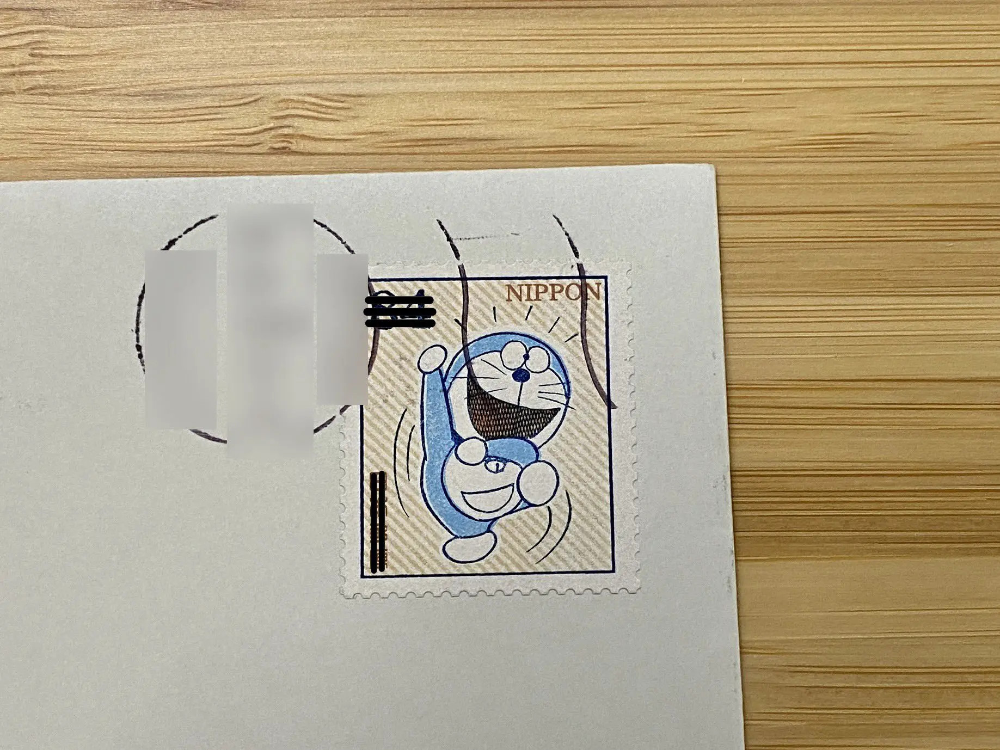
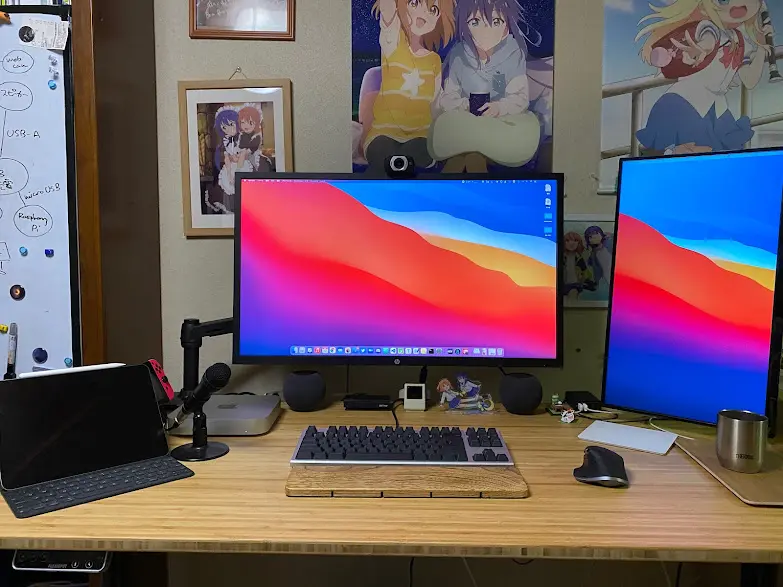

せっかくサイト作ったし今年の夏の振り返り記事とかを書いてみよ〜
アルバイト
そう！労働を開始しました。8月中旬スタートでした。最後にバイトをやったのは高2の夏なので、4年ぶり！
社員の人も優しいし、バイト内容もゆるゆるでとっても居心地が良いです。いや、雰囲気はゆるいけどそれなりの責任が伴うお仕事デスノデ……。ジャンルは技術？系です……？よくわからん、パソコンを使っています。パソコンカタカタオタクにぴったり！ いや、カタカタはあんまりしないかもしれぬ

給与明細についてた切手
教習所
2月おしりにスタートして「予約取れん〜」「運転イヤイヤ期」 とか言ってたらもう9月になってしまいました。つまり半年が経っています。ヤバいよ〜
しかし！ようやく！終わりが見えてきました！ というのもこの長い夏休み(1ヶ月)を使って第二段階のほぼ頭からおしりまで進めることに成功しました！ヤバすぎ
自作の教習予約チェッカー (通称・つまみロボ) をぶんぶん振りかざしてなんとかしました。後から入所した人間F5アタッカーに卒業RTAでバリバリ負けたけど
とりあえず残すは技能3時間+検定、がんばるぞ！
アニメとか漫画とか
あんまり見てない
- スタァライトアニメ見た
- TVアニメ + ロロロ + 劇場版
- かなり面白かった、曲良いし、顔の良い女がデカいのをぶつけ合っててすごすぎ
- 曲がいい (2度目)
- きんいろモザイクアニメ全部見た
- アニメ 1期 + 2期 + 劇場版(1) + 劇場版 (2)
- ツインテ金髪が出てくる、+500000000000000000000000000000点
- 漫画、Kindleのセールで8巻まで買った、今度読みます
- よかったです
- むすんで、つないで。(1) (2) 読んだ
- かなり面白い、みんなかわいい
- 苺さんのキャラクターが好きすぎる
- 2巻の表紙、かわいすぎませんか？
- ゆるゆり (20) 読んだ
- あれこんなギャグ全振りだっけ？ってなった (面白かったけど)
- 1巻から読み直したいな (そんな時間はない)
- そういえば 1, 2 巻がKindleで22円とかいうバカの値段だったので買っちゃった
- スローループ (1) (2) 読んだ
- ツインテ金髪が出てくる、+500000000000000000000000000000点
- カタカナ語あんまりわからん、俺は小春さんなのかもしれない
- アニメ楽しみ〜〜〜
- 安達としまむら (10) 読んだ
- 激ヤバ
- 神
- アニメ2期あくして♡
ゲーム
してない！！！！！！！！！！！！
えーん、そう言えばスカウォ積んでるんですよね……
技術系・開発
結局あんまりやれなかったな
- 競プロの精進をちょいした、ちょい
- セキュコンの本を買いました
- 積んでいます
- は？
- iPhone App 開発本を買いました
- 積んでいます
- は？？
- DMMブックスのバカセールで買ったRust本をちょっと読んだ
- えらい！
- けどあんまり読めなかった
- ほぼやってないようなものでは
- えーん
- 静的サイトジェネレータ作りをした
- えらすぎ
- Space Wandering の整備をちょっとした
- えらすぎ
- ちくわぶ「再履ですか？」
生活環境
自動昇降机になった！！！
立って作業できるのもそうなんだけど、高さの微調整がきくのがとてもよい。座ってても「うーんちょっと高いなー」って調整するとかできる
後期も勉強頑張っちゃうぞ！！！

ワクチン
フルチンになった (Fully vaccinated の意)
2回目の副反応ヤバすぎて3日ぐらい吹き飛んでおしまいになった、カス、バカウイルスゆるさんからな
その他
- ツイッタとかいう虚無が16万ツイに到達して鬱になった
- でも今月あんまりしてなくてえらいかもしれん
- 寝るのが難しくなった
- ぼくのApple Watch Series 3、もう耐えられん
- りんご早く Series 7 売ってくれ〜
- ところで iPad mini も欲しいな(破産)
- おちんぎんが入ってきた
- LINEモバイルやめてようやっとmineoに移った
- 虚無しまくったな……とか思ってたけどまとめてみると意外と色々してた、救われた
おわり